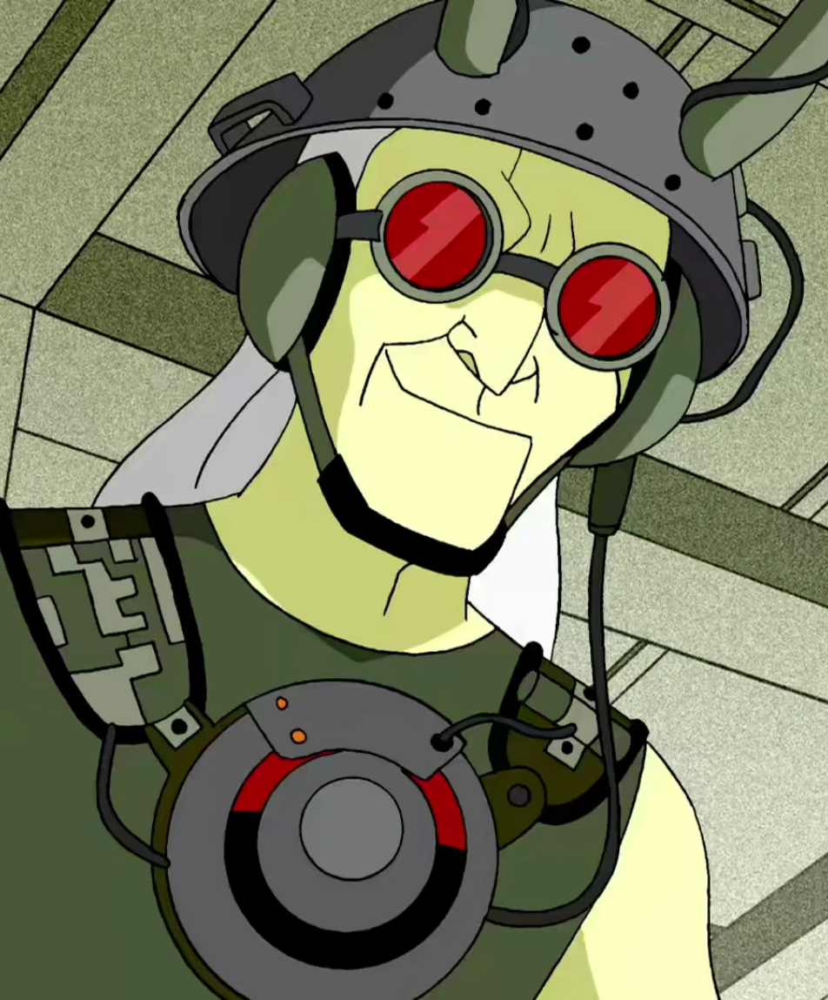

Na série clássica de Ben 10, o Doutor Animal, cujo nome verdadeiro é Aloysius Animo, é um cientista louco e ex-pesquisador veterinário brilhante que enlouqueceu após ter seu trabalho rejeitado pela comunidade científica. Obcecado por provar sua genialidade e se vingar daqueles que o desprezaram, ele cria o Transmodulador, um capacete tecnológico capaz de reanimar criaturas extintas e provocar mutações genéticas gigantescas em animais comuns. Ao longo da viagem de verão de Ben, o Doutor Animal ressurge diversas vezes como um vilão recorrente e persistente, aprimorando seus dispositivos com tecnologia alienígena e combinando o DNA dos alienígenas do Omnitrix com animais terrestres para criar monstros híbridos sob seu controle, exigindo sempre a rápida adaptação de Ben para frustrar seus planos megalomaníacos.